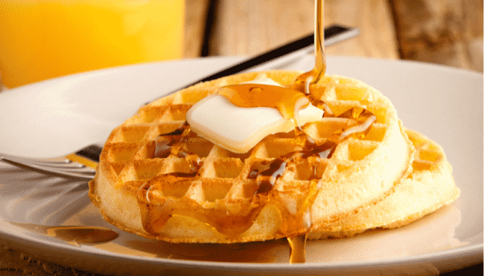

Waffle Clássico

Receita de Waffle Clássica
INGREDIENTES
- 2 xícaras (chá) de farinha de trigo
- 2 colheres de sopa de açucar
- 2 coplheres de chá de fermento em pó
- 1/2 colher de chá
- 2 colheres de amido de milho
- 3 ovos batidos
- 4 colheres de sopa de manteiga sem sal derretida
-
- 1 e 3/4 de xicara de cha de leite
-
- 1 colher de sopa de essencia de baunilha
-
MODO DE PREPARO
- Peneire em um recipiente a farinha de trigo, o açucar, o amido, o fermento e o sal. Reserve
- Em outro recipiente os ovos batidos com leite, manteiga, derretida e essencia de baunilha.
- Despeje sobre a mistura de farinha e rapidamente incorpore os ingredientes
- Aqueça o aparelho de Waffle. Coloque uma concha rasa de massa e espalhe
- Retire e sirva com o que desejar.